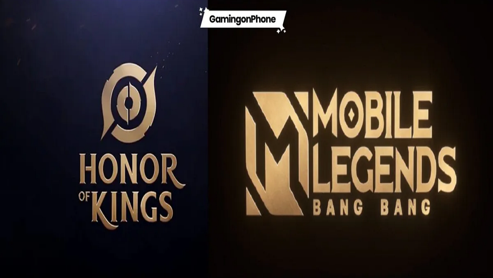
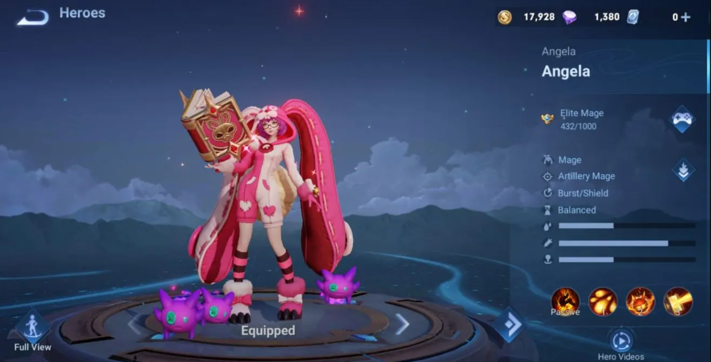
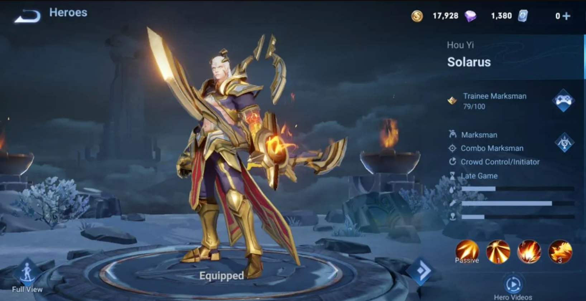
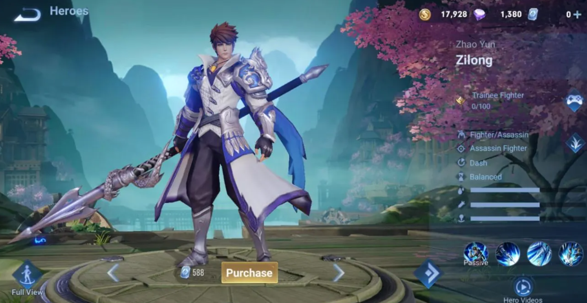
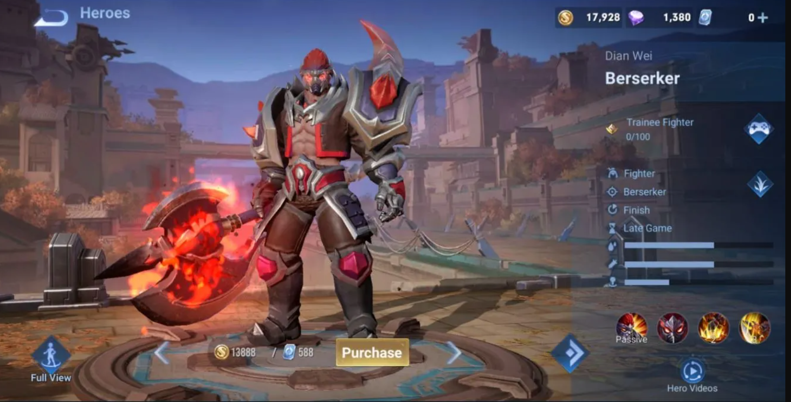
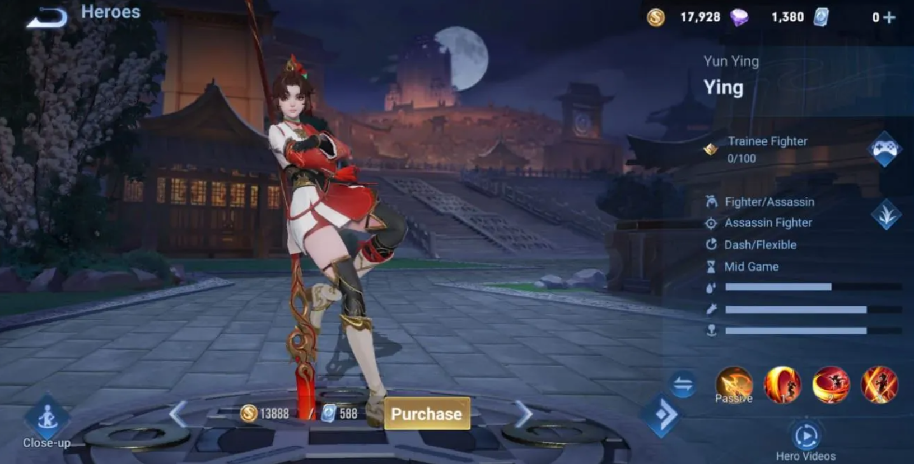
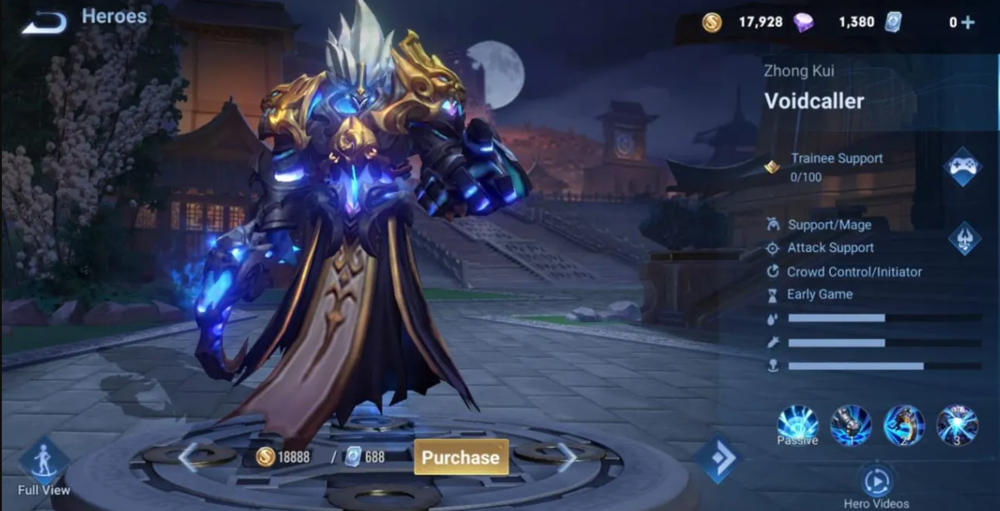
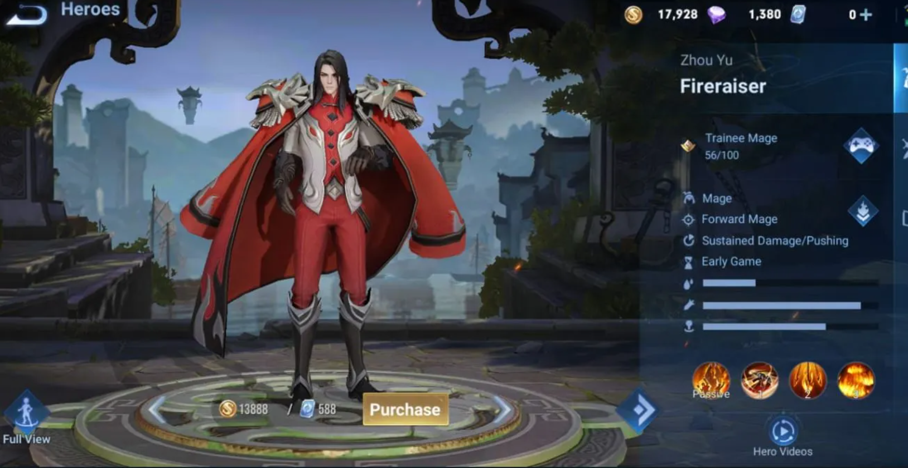
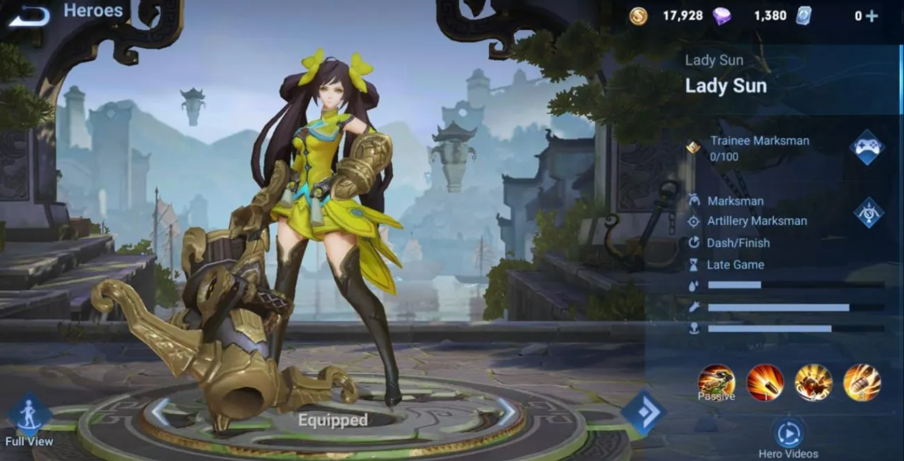
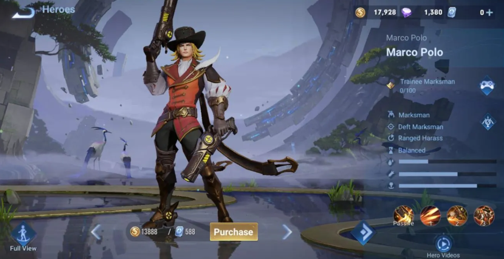

Honor of Kings Guide: 10 heroes similar to Mobile Legends
Compare and choose only the best!
BY CHIRAG CHAUDHURI MARCH 12, 2023
Honor of Kings and Mobile Legends: Bang Bang are both very famous multiplayer online battle arena games. Before the global release of Honor of Kings, Mobile Legends dominated the MOBA world on mobiles because Wild Rift had not been officially released for all servers. So after the release of Honor of Kings, we can see worthy hype among all MOBA players. In this particular segment, we will enlighten the heroes who are kind of similar to each other in Honor of Kings and Mobile Legends.
Honor of Kings heroes similar to Mobile Legends
1. Angela vs. Gord
Angela and Gord both fall under the mage category and can deal a massive amount of damage with their skills. Both their first and second skills can deal Area of Effect damage while controlling the enemy, and if we talk about their ultimate, both can cast a very powerful straight-line ray of light that can be controlled by the movement wheel.
2. Solarus vs. Miya
Solarus and Miya both fall under the Marksman category; both can deal massive damage in the late game. Miya and Solarus’s first skill is very similar because their basic attack will enhance after casting it, and for their second skill, both can stun the enemies in the designated area while providing the vision. Their ultimate is not the same. Miya’s ultimate helps her go into an invisible state, while Solarus’s ultimate works like Moskov’s ultimate; it will stun the target and reveal its position.
3. Zilong vs. Zilong
Honor’s Zilong and MLBB’s Zilong are like twin brothers. Both are known for their high mobility and attack speed. Like HOK’s Zilong, he dashes towards the target, stabs the enemy, and launches them into the center with his ultimate. Where MLBB’s Zilong rushes toward the target by casting his ultimate and then leaps toward the enemy and stabs several times while pulling towards the designated direction. Though names are the same but the using techniques are completely different.
4. Berserker vs. Aulus
Aulus and Berserker both fall under the “fighter” category. Both can charge toward the enemy while ignoring the crowd control effect. They will enhance their attack speed upon casting their second skill. Both can deal true damage while slowing down the enemies after entering their ultimate states. And the main thing about both is the jungler plus the late-game damage dealer. Their sustainability will be a headache for the enemy team.
5. Ying vs. Benedetta
In this case, both are very aggressive ladies. Each can dash very quickly toward the enemies, mostly relying on the jungle because they both fall under the assassin category, and while casting ultimate, both have an area of effect that deals damage to enemies multiple times. Moreover, both can outnumber the enemies if played properly.
6. Voidcaller vs. Franco
In this scenario, Voidcaller comes under mage/support, but Franco comes under support/tank. But with a proper build, both can be used as initiators. If we look closely, both can hook their opponent, slam the ground to slow them down, and then, upon casting Ultimate Enemy, they will be suppressed for a few seconds. Lastly, both heroes’ visual effects are equally eye-catching.
7. Fireraiser vs. Valir
So, in this case, both heroes come under mage and are generally played in mid-lane. Both heroes can be used as proper controllers. From passive to ultimate, all are the same; just the skill order is different. Both heroes’ damage relies on fire. They both can push back the enemies in tricky situations, and enemies suffer from extra burn damage due to their passive. This is a very effective hero in both games; use it wisely and cancel any unwanted ganks from the enemy side.
8. Lady Sun vs. Layla
Both come under the marksman category and can do long-range damage. These two marksmen are generally used to wreck enemies in late games because of their unique skill-casting abilities. Upon casting skill, one will automatically increase the range, which will help them to target enemies more easily while maintaining a safe distance from their assassin, and both of their ultimates have a pretty long-range piercing effect, which will decrease the enemy’s escape chance. You can use this marksman at the beginner level to rank up easily.
9. Marco Polo vs. Clint/Claude
So, our last segment is again in the marksman category. Marco Polo is a very unique type of marksman who can deal devastating damage in the game. It will remind you of Clint’s gameplay. First, he will shoot some rounds of bullets toward the enemy while dashing in the designated direction. And upon casting his ultimate, it will remind you of Claude’s ultimate, which has an area of effect that will deal damage to all enemies in its radius.
Final Thoughts
In the above-discussed section, we can find many similar heroes between Honor of Kings and Mobile Legends, but that does not mean that they are duplicates. Each game’s inbuilt mechanics and playstyle are different, so you can enjoy both games simultaneously if you are a true multiplayer online battle arena lover. Try to find your techniques to pave your victory on the battlefield. The main thing is that if you are good at some MLBB heroes and then use the same kind of hero in Honor of Kings, it will give you an advantage over other players.